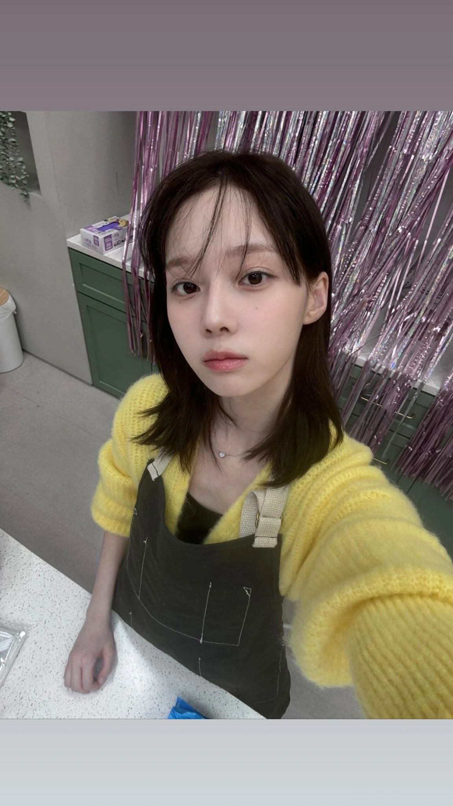

무료 1:1 동행
상세 만남 주소는 약속 확정 후 당사자에게만 공개됩니다.외부 메신저 유도에 주의하세요.
2024년 9월 18일 수요일
안녕하세요! 미술관 전시 관람 신청해주셔서 감사해요 :) 혹시 토요일 오후 2시 괜찮으실까요?
안녕하세요 박**님! 네, 2시 딱 좋아요. 미술관 1층 로비 쪽에서 뵐까요?
좋습니다! 그럼 티타임도 전시 보고 근처 조용한 카페에서 잠깐 가져요.